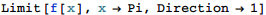

東京大学 2018年 理科 第1問
問題
関数
の増減表を作り、x→+0,x→π-0のときの極限を調べよ。
解答

だから、のときcot x>0、のときcot x=0、のときcot x<0
だから、0<x<πにおいて、csc x>1
0<x<πにおいてx-sin x>0だから、2x-sin 2x>0
したがって、
のとき、f'(x)<0でf(x)は単調減少。
x = π/2のとき、f' (x) = 0でf(x)は最小値。
のとき、f'(x)>0でf(x)は単調増加。
f(x)を図示すると下図。
また、求める極限値は

補足・感想
f'(x)の正負を人間が調べやすい形に変形するのにFullSimplify、TrigExpand、TrigReduce、TrigToExpなどを試し、最終的にTrigReduceを使った。